زينة القدس أزياء تروي حكايات النساء
"تميزت أزياء نساء القدس بأناقتها و تفاصيلها الدقيقة. كل ثوب كان يحمل قصة صاحبه، من لون التطريز الى شكل غطاء الرأس، هنا أبرز ما اشتهرت به العاصمة الخالدة."
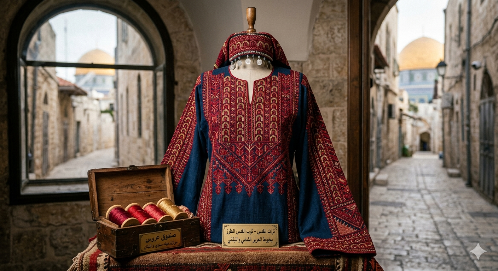
ثوب القدس.. فخر الحضارة
يتميز ثوب القدس بلونه الأحمر و القرمزي على الصدر و الأكمام. كان يطرز بخيوط الحرير الطبيعي المستزرد من سوريا و لبنان. أشهر الغرز المستخدمة: "غرزة الفلاحي" و "العقود"(اقواس صغيرة متتالية)
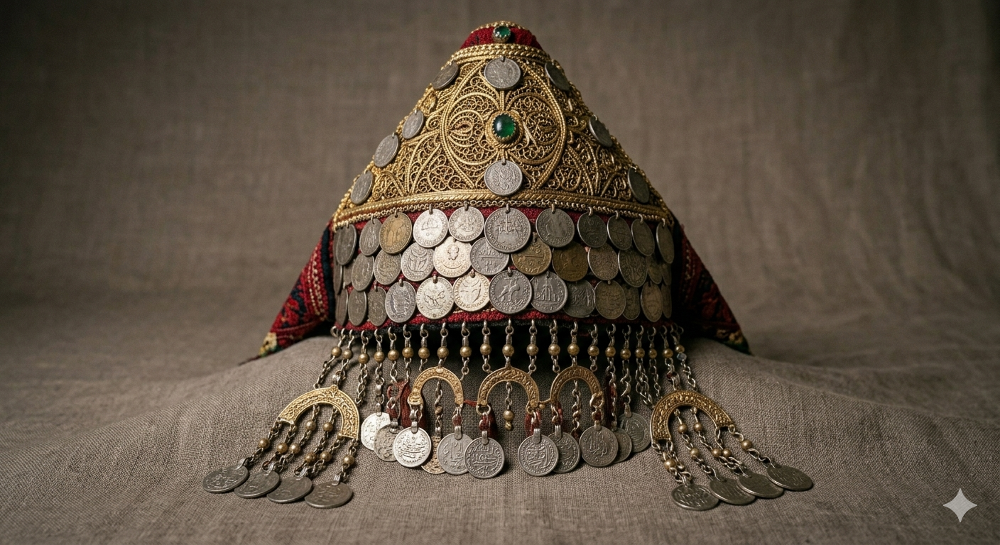
الشطفة.. تاج المرأة المقدسية
غطاء رأس تلبسه نساء القدس المتزوجات، مصنوع من الفضة أو النحاس المذهب. تتدلى منه قطع معدنية صغيرة(الحبك) على الجبين و الصدعين، و يزين أحيانا بالعملات القديمة.
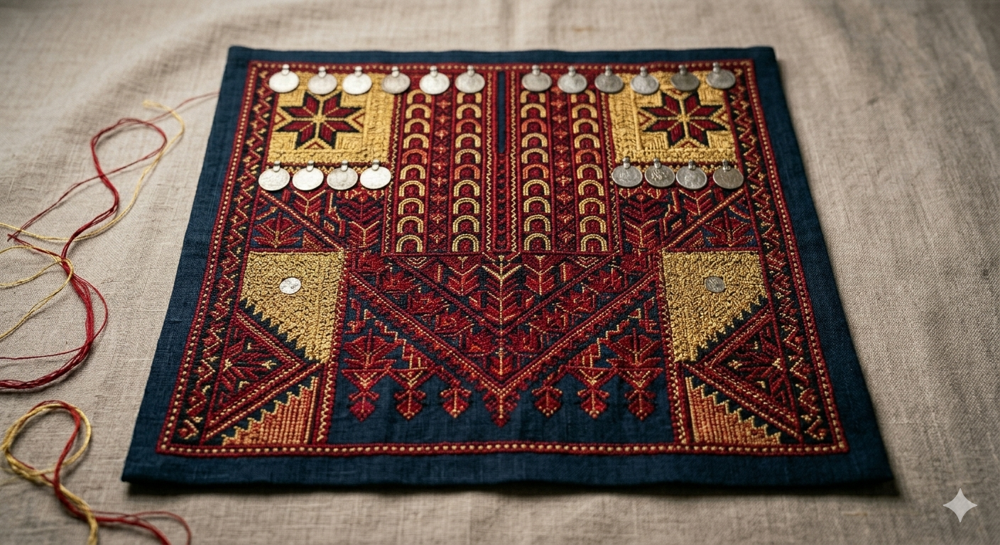
القبة.. لوحة مطرزة على الصدر
قطعة قماش منفصلة توضع على الصدر، تغطي منطقة الصدر و البطن. كانت تطريزاتها تشير الى الخالة الاجتماعية للمرأة(عزباء، متزوجة، أرملة) . لونها الغالب الأحمر و الأسود و الذهبي.
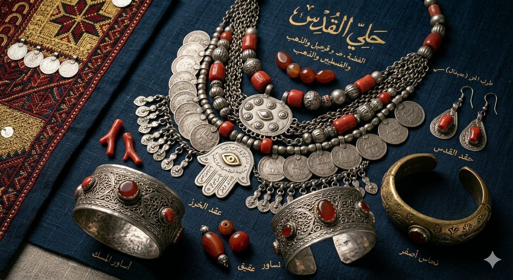
حلي القدس.. فضة و مرجان و ذهب
تشتهر نساء القدس بارتداء عقود فضية كبيرة تسمى "الخرز"، و أساور من الفضة أو النحاس الأصفر تسمى "المسك". كما استخدمن المرجان و العقيق لحماية أنفسهن من العين و الحسد.
حرف القدس.. ابداع من تراب الأرض
"اشتهرت القدس بحرف يدوية متنوعة، بعضها يعود لقرون و لا تزال ورشها تعمل حتى اليومفي أزقة البلدة القديمة."
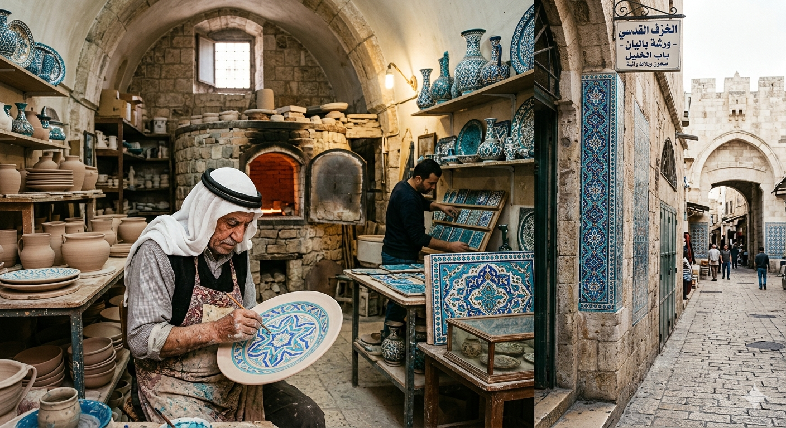
الخزف القدسي
صناعة البلاط و الصحون و الانية الخزفية، تتميز بألوانها الزرقاء و البيضاء و الفيروزية. تزين جدران المسجد الأقسى و قبة الصخرة و البيوت القديمة. لا تزال ورش الخزف تعمل في منطقة باب الخليل و سوق القطاطين
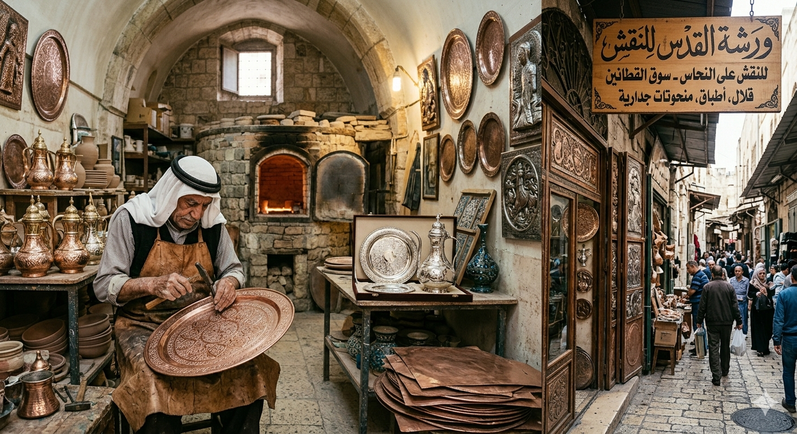
النقش على النحاس
صناعة الأطباق، القلالي(أباريق القهوة)، و المنحوتات الجدارية. حرفة عمرها مئات السنين، تنتشر ورشها في سوق القطاطين داخل البلدة القديمة. النحاس المفدسي كان يغطى أحيانا بالفضة و يهدى للعرائس.
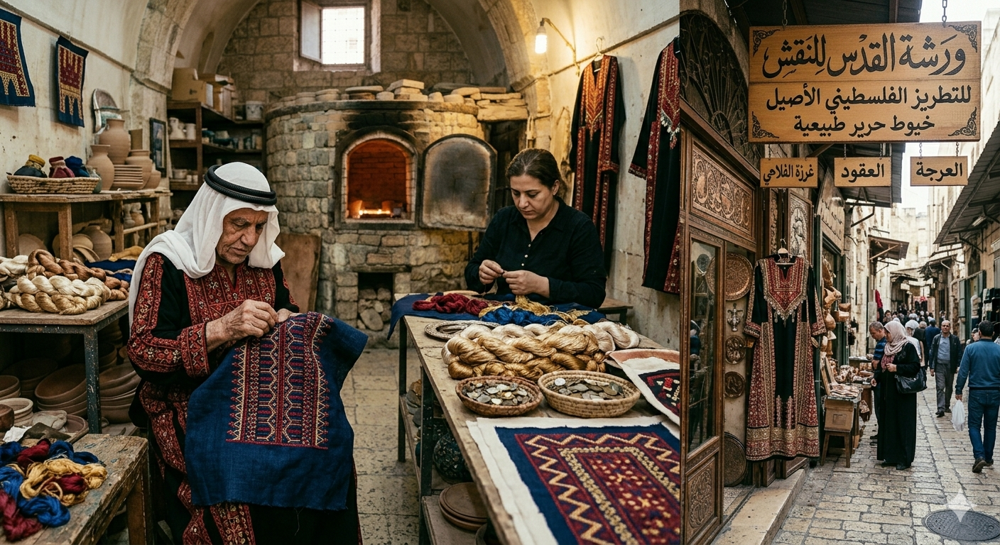
التطريز الفلسطيني
يشتهر تطريز القدس باستخدام خيوط الحرير الطبيعي. أشهر الغرز: غرزة الفلاحي، العرجة، و العقود. كل غرزة كانت تحمل اسم منطقتها. التطريز المقدسي يعد من أغلى أنواع التطريز الفلسطيني لاستخدامه الحرير الطبيعيي.
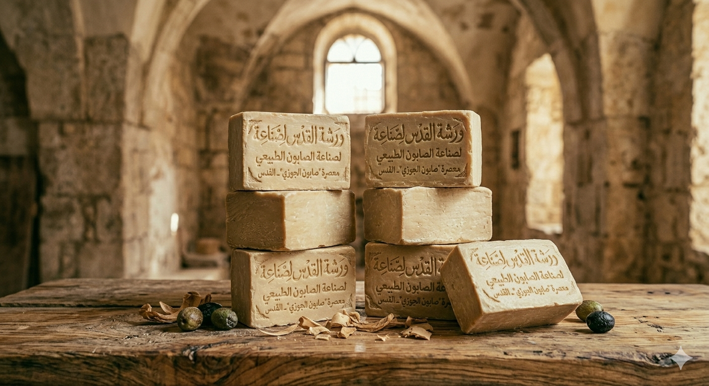
الصابون الطبيعي
يصنع من زيت الزيتون و المواد القلوية. كانت للقدس مصانع خاصة بصناعة الصابون (مثل معصرة "صابون الجوزي")، و كان يصدر الى مصر و أوروبا. بعض العائلات المقدسية لا تزال تحتفظ بقوالب صابون عمرها أكثر من 50 عاما
ألحان القدس .. ايقاع لا يسكت
"من حارات البلدة القديمة الى ساحات المسجد الأقصى، كانت الموسيقى و الغناء جزءا من روح الفدس. هنا أبرز ما اشتهرت به."
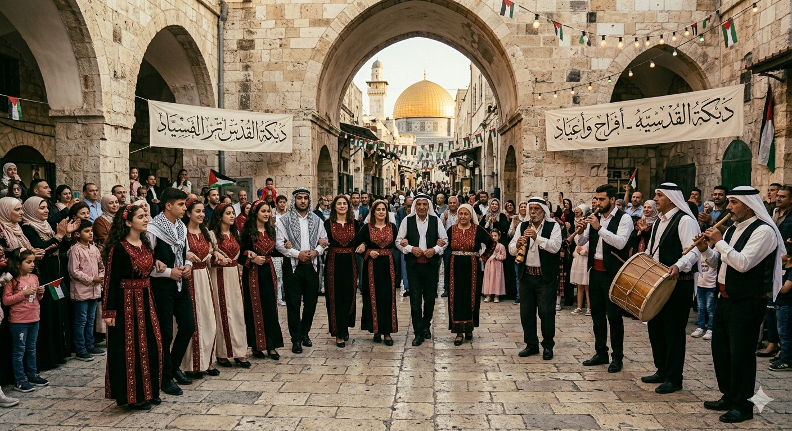
الدبكة القدسية
رقص جماعي فلسطيني، تؤدى في الأفراح و المناسبات الوطنية. دبكة القدس تتميز بخطوانها البطيئة المهيبة في البداية ثم تتسارع تدريجيا. الالات: الشبيابة (الناي)، المجوز(الأرغول)، الطبل، و البرغول. كانت تقام الدبكات الجماعية في ساحات المسجد الأقصى أيام الأعياد.
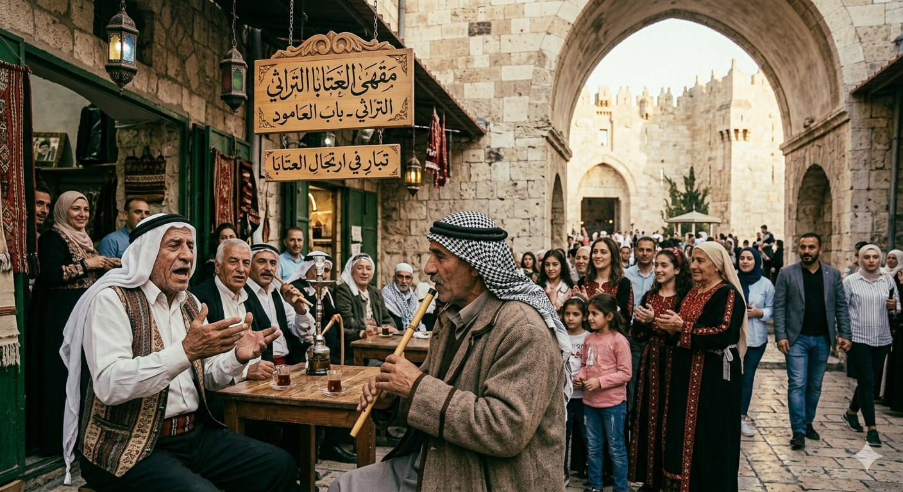
العتابا (الشعر الغنائي المرتجل)
لون من الشعر الغنائي يغنى بصوت عال، يعبر عن الحب، الفراق، الفخر، أو الحنين. يتبارى فيها المغنيان بارتجال الأبيات . في القدس، كان كبار السن يتبارون في ارتجال العتابا أمام المقاهي في باب العامود و خان الزيت.

الميجنا و الدلعونا
أغنيات شعبية سريعة الايقاع تشبه الدلعونا، تستخدم في الأعراس و المناسبات السعيدة، غالبا ما يردد الجمهور خلف المطرب. كلمات الميجنا بسيطة و متكررة، مما يجعل الجميع يشاركون بسهولة،
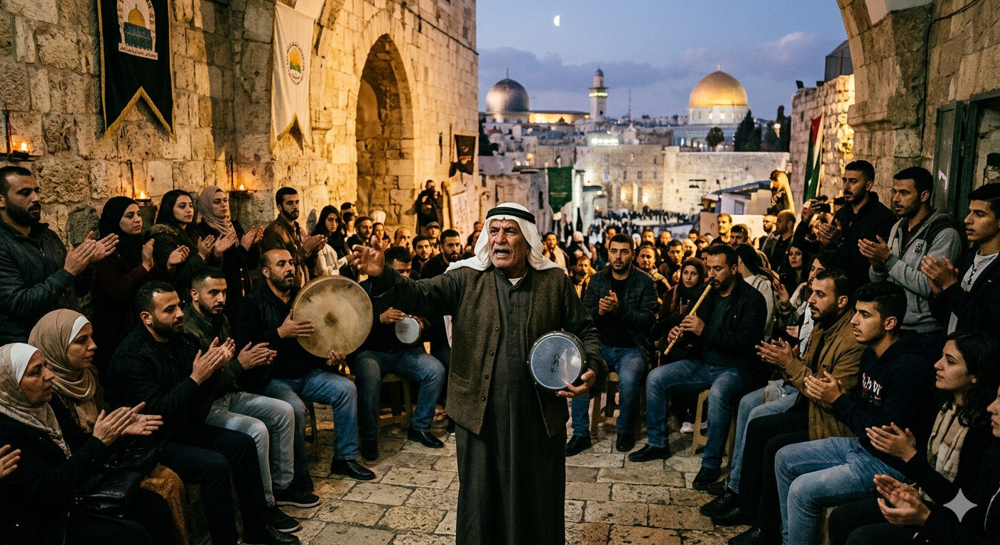
الزجل القدسي
شعر شعبي قوي ينشد بمرافقة الطبول أو بدون موسيقى. يتناول مواضيع المقاومة، حب الأرض، و الهوية الزجل كان يستخدم كوسيلة لتوثيق الأحداث السياسية و الاجتماعية في القدس، خاصة خلال الانتداب البريطاني.